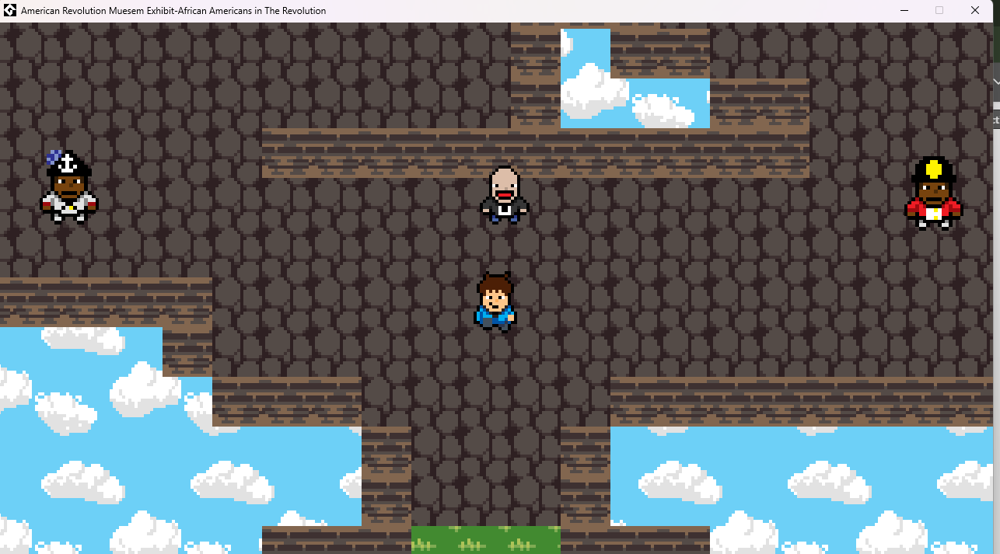

...is my name.}
{This is my portfolio so you can learn more about me and what I do!}
{Up above is my mug^}
{Hey there! As you now know my name is Chris! and this is my website!
I'm an undergraduate student at St. Mary's College of Maryland with a major in Computer Science and a minor in History. Computer Science has always been an interest of mine even as a wee lad. From creating very scuffed Minecraft mods on an old computer, to helping migrate a website for my college I enjoy all aspects of Computer Science and hope to purse a career in Software Development and work on a personal project of mine which is a game I have been working on.}
{Over my summer internship in Web Services at St. Mary's College of Maryland I helped migrate the old SGA site into this new one built on Wordpress from scratch.}
 Go to Clubs Page
Go to Clubs Page
{The clubs page wouldn't allow me to embed it so rather if you would like to see it click on the button. The clubs page is something I helped maintain over the course of my summer intership in web services and is something I still handle as Director of Communications of the SGA. The site is built on Drupal and due to that I have become very familiar with using Drupal as a backend.}

Go to itch.io Page{For my American Revolution class I decided to do a virtual mueseum exhibit on African Americans in the American Revolution built on GameMaker. The product of that is this little game! Provided above is the itch.io link to the gamepage wherein from there you can download the .zip file to play it.}
Outside of coding I enjoy doing a lot of things! I like needle felting, writing, drawing, listening to music, and playing video games! I'm also involved on my campus in SGA, the Orientation Team, the Commuter Life team as the Commuter Assistant, the theatre club on campus Thank You 5! as the treasurer and as an actor.